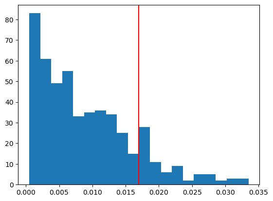
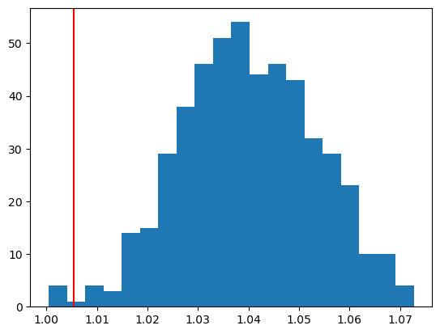
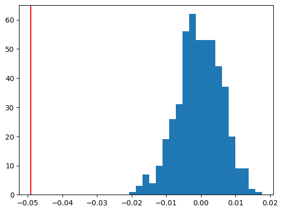

import torch
import torch.nn as nn
import torch.optim as optim
import numpy as np
import matplotlib.pyplot as plt
import scipy
torch.manual_seed(42)<torch._C.Generator at 0x112a1c3f0>import torch
import torch.nn as nn
import torch.optim as optim
import numpy as np
import matplotlib.pyplot as plt
import scipy
torch.manual_seed(42)<torch._C.Generator at 0x112a1c3f0>We have two potential titles for a Youtube video. We want to see which one has a higher click-through-rate.
Title A: 98 views over 1000 impressions
Title B: 162 views over 2000 impressions
We conduct a permutation test to test whether CTR for A (\theta_A) is equal to CTR for B (\theta_B).
H_0: \theta_A=\theta_B, \quad H_1: \theta_A \neq \theta_B.
Our test statistic is |\hat{\theta}_A-\hat{\theta}_B|.
Dataset A: (1, \dots, 1, 0, 0, \dots, 0) (98 ones, 902 zeros)
Dataset B: (1,\dots, 1, 0, \dots, 0) (162 ones, 1838 zeros)
We pool the Dataset A and Dataset B. (We will shuffle Dataset A and Dataset B in the permutation test).
Here is an example of a random draw from the null distribution (that the CTR of A and B is the same).
Permutation test:
n_perm = 500
resampled_Ts = np.zeros(n_perm) # where to store our permutation test statistics
for cur_sim in range(n_perm):
# Pool with 1s for views and 0s for non-views
pool = np.array([1]*all_views + [0]*(all_imps - all_views))
# create an array with (98+162) ones and (1000+2000 - 98-162) zeros
# (1, 1, 1, 1, ..., 1, 0, 0, 0, ..., 0) (1, 1,.., 1, 0, 0, 0, 0, ...,0)
# (1, 1, 0, 0, 0, 1, ..., 0, 1, 0, )
# Sample without replacement for impsA
impsA = np.random.choice(pool, n_impsA, replace=False)
# new permuted dataset of size n_impsA
viewsA = np.sum(impsA)
viewsB = all_views - viewsA
resampled_Ts[cur_sim] = abs(viewsA/n_impsA - viewsB/n_impsB) # | theta_1 -theta_2| for this dataset
p_value = sum([1 for t in resampled_Ts if t >= obs_T]) / n_perm
print(f"P-Value: {p_value:.4f}")
plt.hist(resampled_Ts, bins=20)
plt.axvline(obs_T, color='red')
plt.show()P-Value: 0.1140
Conclusion: we retain the null hypothesis.
Data: (X_1,Y_1), (X_2, Y_2),\dots, (X_n, Y_n)
We consider two different methods to conduct an independence test:
H_0: X \text{ is independent of } Y \text{ vs. } H_1: X, Y \text{ not independent}
We create simulated data which we know is NOT independent.
Ideally, we should reject the null hypothesis that Y and X are independent.
p1 = 5 # dimension of X
p2 = 3 # dimension of Y
signal_strength = 0.3
n_samples = 10000
X = np.random.randn(n_samples, p1)
B = np.random.randn(p2, p1)
B = B / np.linalg.norm(B, ord='fro') # some parameter
Y = signal_strength * X @ B.T + np.random.randn(n_samples, p2)
# Y = B X + random noise
X = torch.tensor(X, dtype=torch.float32)
Y = torch.tensor(Y, dtype=torch.float32)def testerr(x, y, epochs=200):
# trains a neural network to predict y from x
ntrain = int(n_samples * 0.7) # train on 70% of the data
ntest = n_samples - ntrain
x_train = x[:ntrain]
x_test = x[ntrain:]
y_train = y[:ntrain]
y_test = y[ntrain:]
net = NNet(p1, p2)
net.train()
optimizer = optim.Adam(net.parameters(), lr=0.2)
for epoch in range(epochs):
optimizer.zero_grad()
outputs = net(x_train)
loss = nn.MSELoss(reduction='mean')(outputs, y_train)
loss.backward()
optimizer.step()
net.eval()
outputs = net(x_test)
loss = nn.MSELoss(reduction='mean')(outputs, y_test)
return loss.item()
# our observed test statistic is the loss in predicting y from x
obs_T = testerr(X, Y)# Calculate p-value
p_value = sum([1 for t in resampled_Ts if t <= obs_T]) / n_permutations
# plot distribution of permuted_test_statistics
plt.hist(resampled_Ts, bins=20)
plt.axvline(obs_T, color='red')
plt.show()
print(f"Observed test statistic: {obs_T:.4f}")
print(f"P-Value: {p_value:.4f}")
Observed test statistic: 1.0055
P-Value: 0.0080net.train()
epochs = 200
optimizer = optim.Adam(net.parameters(), lr=.2)
for epoch in range(epochs):
optimizer.zero_grad()
outputs = net(X_train)
loss = nn.MSELoss(reduction='mean')(outputs, Y_train)
loss.backward()
optimizer.step()
net.eval()
testerrs = torch.sum((Y_test - net(X_test))**2, dim=1)
mean_testerr = torch.mean(testerrs)print(f"Mean Test Errors: {mean_testerr:.4f}")
print(f"Mean Null Test Errors: {mean_nullerr:.4f}")
obs_T = mean_testerr - mean_nullerrMean Test Errors: 3.0165
Mean Null Test Errors: 3.0656n_permutations = 500
resampled_Ts = []
for _ in range(n_permutations):
heads = torch.randint(0, 2, (ntest,))
resampled_testerrs = combined[torch.arange(ntest), heads]
resampled_nullerrs = combined[torch.arange(ntest), 1-heads]
# test error using X - test error not using X
resampled_T = torch.mean(resampled_testerrs) - torch.mean(resampled_nullerrs)
resampled_Ts.append(resampled_T)
## Calculate p-value
p_value = sum([1 for t in resampled_Ts if t <= obs_T]) / n_permutations
resampled_Ts = [t.detach().numpy() for t in resampled_Ts]
plt.hist(resampled_Ts, bins=20)
plt.axvline(obs_T.detach().numpy(), color='red')
plt.show()
print(f"P-Value: {p_value:.4f}")
P-Value: 0.0000